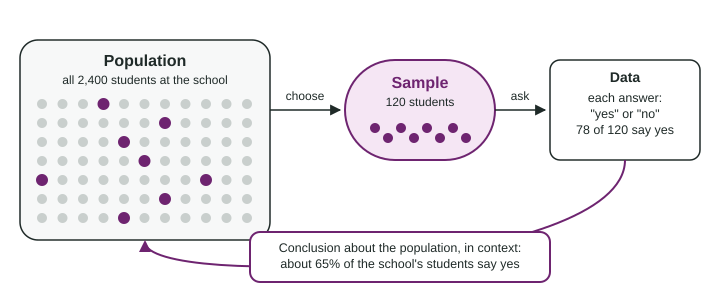

Some questions have one answer you can look up: how long is the lunch period? Others have answers that change from person to person: how long do students at your school spend on homework? The second kind is what statistics is for. This page sets up the words the whole course uses: statistics, data, population, sample and context.
What statistics is
Statistics is the science of collecting, summarizing and reading data to answer questions whose answers vary. Data are the values you record: answers to a question, counts, measurements. If every student spent exactly 40 minutes on homework, you would need to ask only one student. Because the answers vary, you need data from many students, and you need tools to make sense of them.
So the first test of a good question is simple: would the answer differ from one person, animal or object to the next? "How many minutes did I study last night?" has one answer. "How many minutes do students at this school typically study on a school night?" needs data from many students.
Population and sample
The population is the whole group a question is about. The sample is the part of the population you actually collect data from. A study uses data from a sample to answer a question about a population.

Why not ask everyone? Because it usually costs too much or takes too long. A school of 2,400 students could perhaps be asked, but a country of millions cannot, and a factory cannot open every bag of rice it makes to weigh it. A sample is a practical stand in for the population.
A sample is useful only when it represents the population, that is, when it looks like the population in the ways that matter for the question. A sample of students from one teacher’s classes may sleep, study or eat lunch differently from the rest of the district. Later in this unit you will learn how choosing a sample by chance makes it likely to represent the population.
Name the population and the sample. A student council wants to know whether the school’s 2,400 students would use a quiet study room at lunch. It chooses 120 students at random from the school list and asks each one. Of the 120, 78 say yes.
Population: all 2,400 students at the school (the question is about every student).
Sample: the 120 students who were asked (data came from them).
Summary of the data: 78 out of 120 is , or 65%.
Conclusion in context: "In the sample, 65% of the students said they would use a quiet study room at lunch. That suggests about 65% of the school’s students would, give or take several percentage points."
Results vary from sample to sample
Suppose the council chose a second group of 120 students at random. Would exactly 78 say yes again? Probably not. Different students give different answers, so the result might be 74 or 81. Results from groups chosen by chance from the same population tend to be close to each other, but they are rarely identical.
This is why a sample result is an estimate for the population, not its exact value. Saying "exactly 65% of all 2,400 students want the room" claims too much. The 65% is a fact about the sample. For the school it is our best estimate.
Always state results in context
Context is the real situation behind the numbers: who or what was studied, and what was measured. "The answer is 65%" tells a reader nothing. "65% of the 120 students surveyed said they would use a quiet study room at lunch" tells them who, what and how many. On the AP® Statistics exam, an answer without context usually loses credit, even when the number is right.
| Not in context | In context |
|---|---|
| The answer is 0.65. | 65% of the 120 students surveyed would use a quiet study room at lunch. |
| Most said no. | 80% of the 5,000 readers who voted online opposed the stadium. |
| It is about 7 hours. | Students in her classes slept about 7 hours on a typical school night. |
Putting it together
Every study in this course follows the same path. Start with a question about a population whose answers vary. Collect data from a sample that represents the population. Summarize the data. Then say what the summary suggests about the population, in context, remembering that another sample would give a slightly different answer. The rest of Unit 1 fills in each step: how to describe the data you collect, and how to collect data you can trust.